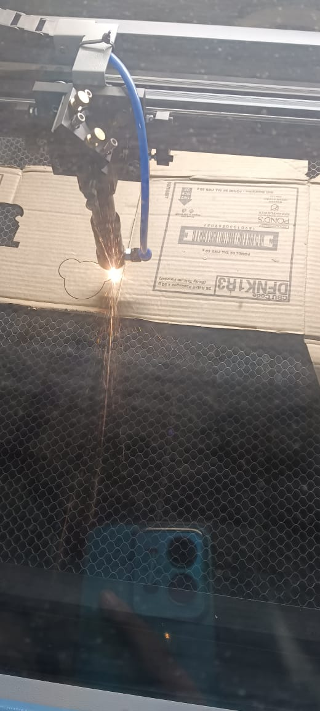
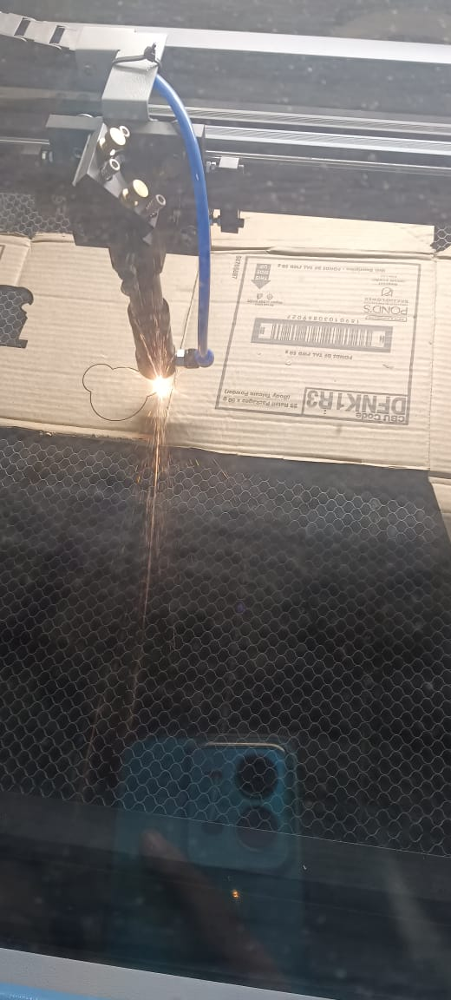
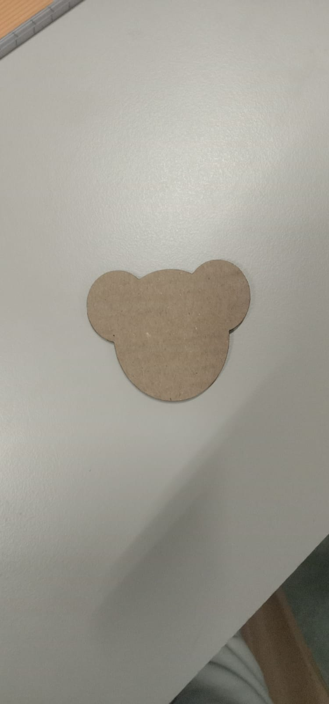
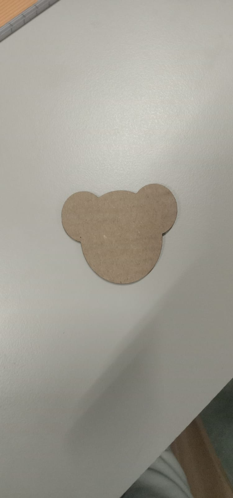

Laser cutting is a technology that usas a laser to vaporize materials, resulting in a cut edge. While typically used for industrial manufacturing applications, it is now used by schools, small businesses, architecture, and hobbyists. Laser cutting works by directing the output of a high-power laser most commonly through optics. The laser optics and CNC (computer numerical control) are used to direct the laser beam to the material. A commercial laser for cutting materials uses a motion control system to follow a CNC or G-code of the pattern to be cut onto the material. The focused laser beam is directed at the material, which then either melts, burns, vaporizes away, or is blown away by a jet of gas,[1] leaving an edge with a high-quality surface finish.
Laser drilling uses several methods, including single-shot, percussion, trepanning, and helical. Single-shot and percussion laser drilling produce holes at a higher rate than the other processes. Trepanning and helical drilling, produce more accurate, higher-quality holes.
Laser cutting is a non-contact process where cutting is completed without making contact with the cut material. It can shape high-strength, brittle materials such as diamond tools and refractory ceramics. The first production laser cutting was introduced in 1965 and was used to drill holes in diamond dies. It was later used for cutting high strength alloys and metals such as titanium for aerospace applications. Its range of applications covers the cutting of polymers, semiconductors, gems, and metallic alloys.


 


 
